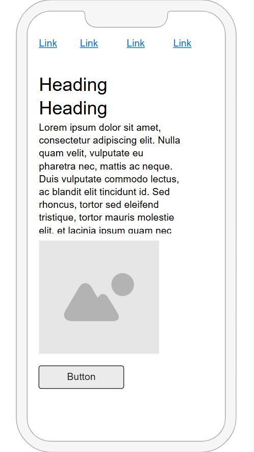
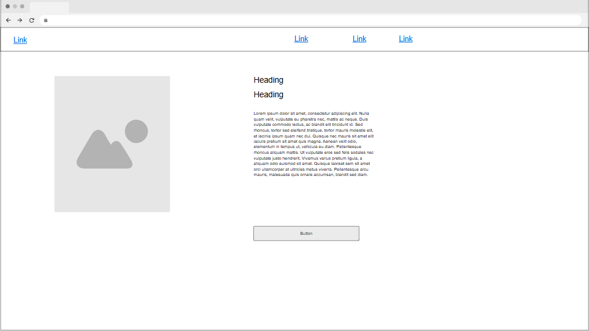

Site Title: Facundo Amarilla's Web Portfolio
This name reflects a professional and personal brand to showcase my work in web development. It’s clean, clear, and directly communicates the site's purpose.
This website will serve as an online portfolio to present my web development projects, provide information about my background, and allow visitors to contact me for collaboration or opportunities.
This font is clean, modern, and highly readable, providing a consistent and professional appearance across the site.

